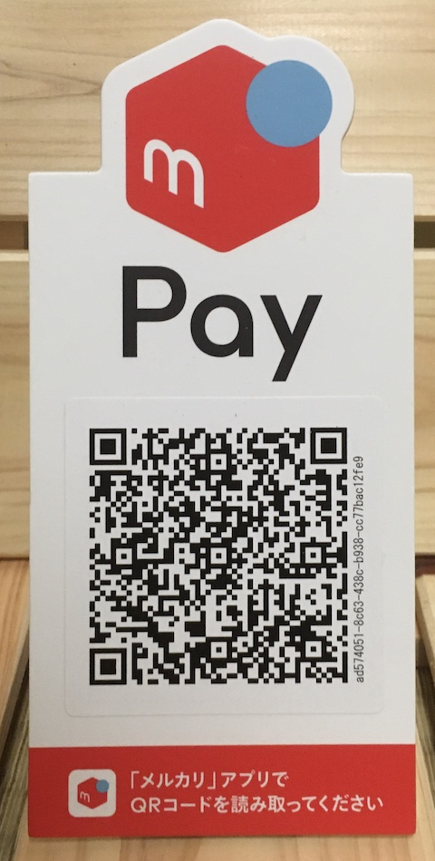
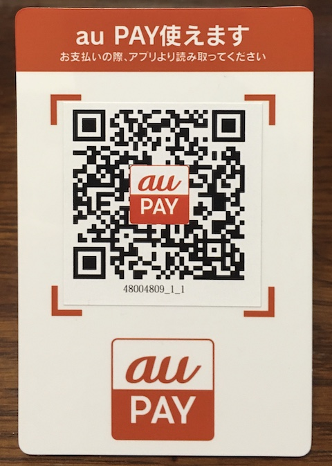

よくある質問
よくあるご質問をまとめました。
Webサイト作成篇
学習篇
- Q) プログラミングは全くの初心者ですが、学べるでしょうか？
- A) ご安心ください。１０代の方から５０代の方まで、その方のペースで皆さん習得なさっております。
- Q) 初心者ですが、なにを学んだら良いでしょうか？
- A) HTML講座は、比較的習得が容易で、初めての方にお勧めです。 基礎を習得なされた後に、Webプログラミング講座へと進まれるのがお勧めです。 また、ITの基礎、コンピュータの仕組みを理解されたい方のために、ITパスポート講座も人気です。
- Q) どれくらいの期間があれば、習得可能でしょうか？
- A) 個人差はございますが、学習期間は、概ね週一回二時間、二ヶ月を目安にしていただければと思います。
- Q) 学びたいのですが、講座の開講時間はいつですか？
- A) お仕事を終えて、平日の夜に学ばれる方、日曜日にまとめて学習される方、人それぞれです。 学習成果の維持、向上、継続のために、定期的に学ばれることをお勧めいたします。
- Q) 予定していた日に行けなくなりました。振り替え可能でしょうか？
- A) はい、お分かりになった時点でご連絡ください。振り替え等、柔軟に対応させていただきます。
- Q) 講座代はいくらくらいでしょうか？
- A) 街中のプログラミング教室ですと、一時間で5000円が相場となっております。広く個人の方に学んでいただきたいという想いから、概ね半額ほどでご指導いたしております。ご予算に応じてご相談にも乗りますので、お気軽にお問い合わせください。
- Q) どのようにお支払いすればよろしいでしょうか？
- A) 回数券をお求め頂くほか、メルペイ、au Pay にも対応いたしております。 
- Q) 学習会場はどこになりますか？
- A) 受講形態ですが、パソコン教室というよりは、喫茶店やファミリーレストランのようなところでの、 家庭教師のようなイメージを持っていただければ良いかと思います。 お友達もご一緒など、人数が集まりましたら、 公共施設や会議室を借りてのグループレッスンも可能です。
- Q) 詳しく内容を伺いたいです。打ち合わせしたいのですが。
- A) もしご都合がよろしければ、喫茶店等で、お打ち合わせ等、できたらと思っておりますし、 パソコンをお持ちでしたら、簡単な開発環境の整備やミニ講座などできたらと思っております。